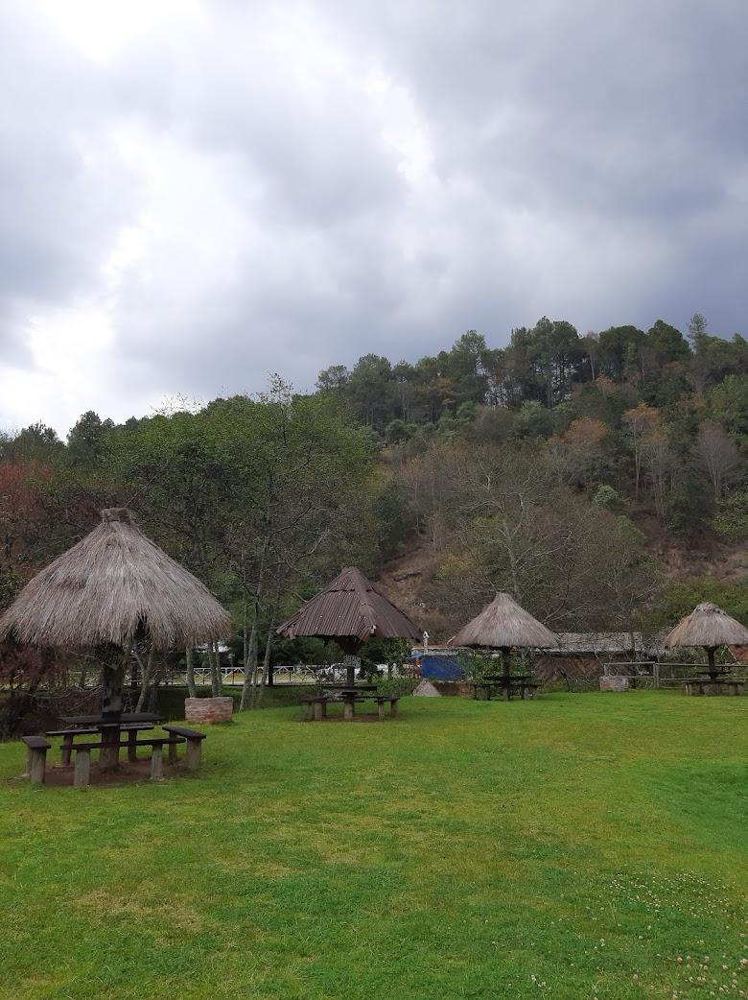

Las Grutas Del Mamut
- A solo 7 kilometros del pueblo magico de san cristobal se encuntra un parque ecoturistico con una gran extension de pasto verde,
arboles, juegos y por supuesto las grutas del mamut como el principal atractivo de la gente, que toma como nombre por la fomracion rocosa con
la forma de un mamifero prehistorico, esta enorme cueva llena de formaciones impresionan a los visitantes y turistas. Por la forma de la misma,
no es ningun impedimento para disfrutar de esta maravillosa naturaleza.

- ¿Precio de la entrada?
-
- La entrada por persona es de $20 pesos, puedes apartar lugar para que puedas llevar la comida y prepararlos ahi sin ningun problema,
unas ricas carnitas azadas en familia, mientras los niños podran jugar en el amplio jardin. Las grutas del mamut los esperara para divertirse en familia
dentro de una amplia y maravillosa naturaleza.
- 
- ¿Como puedo llegar?
- Se ubica a tan solo 7 kilometros de san cristobal de las casa que va de Tenejapa. De la carretera calzada de la quinta 29234, podriamos llegar en combi
carro o taxi, pero uno no se pierde.
- ¿Que puedes hacer?
- Tirolesa
- Senderismo
- Calbagata
- Llevar tu propios alimentos
- Ocupar una choza
- Visitar la cueva
- Paseo en blasa rustica